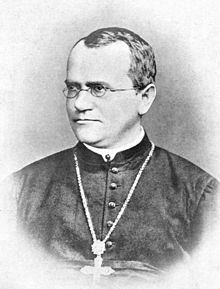

Gregor Johann Mendel (20 de julio de 18224-6 de enero de 1884) fue un monje agustino católico y naturalista nacido en Heinzendorf, Austria (actual Hynčice, distrito Nový Jičín, República Checa) que descubrió, por medio de la experimentación de mezclas de diferentes variedades de guisantes, chícharos o arvejas (Pisum sativum), las llamadas Leyes de Mendel que dieron origen a la herencia genética.
En 1941 Edward Lawrie Tatum y George Wells Beadle demostraron que los genes ARN mensajero codifican proteínas; luego en 1953 James D. Watson y Francis Crick determinaron que la estructura del ADN es una doble hélice en direcciones antiparalelas, polimerizadas en dirección 5' a 3', para el año 1977 Fred Sanger, Walter Gilbert, y Allan Maxam secuencian ADN completo del genoma del bacteriófago y en 1990 se funda e
Aunque la genética juega con un papel muy significativo en la apariencia y el comportamiento de los organismos, es la combinación de la genética, replicación, transcripción y procesamiento (maduración del ARN) con las experiencias del organismo la cual determina el resultado final.
Los genes corresponden a regiones del ADN o ARN, dos moléculas compuestas de una cadena de cuatro tipos diferentes de bases nitrogenadas (adenina, timina, citosina y guanina en ADN), en las cuales tras la transcripción (síntesis de ARN) se cambia la timina por uracilo —la secuencia de estos nucleótidos es la información genética que heredan los organismos. El ADN existe naturalmente en forma bicatenaria, es decir, en dos cadenas en que los nucleótidos de una cadena complementan los de la otra.
La secuencia de nucleótidos de un gen es traducida por las células para producir una cadena de aminoácidos, creando proteínas —el orden de los aminoácidos en una proteína corresponde con el orden de los nucleótidos del gen. Esto recibe el nombre de código genético. Los aminoácidos de una proteína determinan cómo se pliega en una forma tridimensional y responsable del funcionamiento de la proteína. Las proteínas ejecutan casi todas las funciones que las células necesitan para vivir.
El genoma es la totalidad de la información genética que posee un organismo en particular. Por lo general, al hablar de genoma en los seres eucarióticos se refiere solo al ADN contenido en el núcleo, organizado en cromosomas, pero también la mitocondria contiene genes y es llamada genoma mitocondrial.
